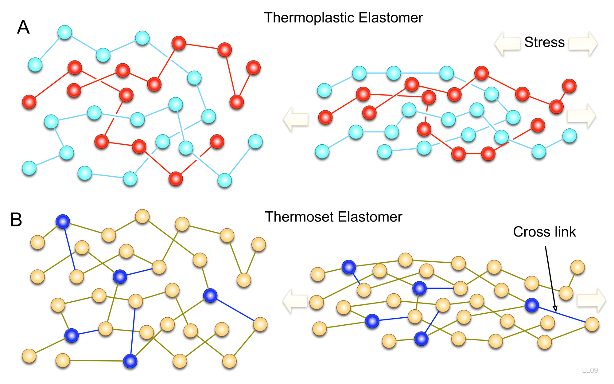

This webpage covers many of the basic design principles and practices of plastic injection molding. You'll find helpful graphics, equations, and design information that will hopefully lead to better and more economic designs with plastic.
Get StartedThere is a staggering variety of plastics currently available. At the most basic level, there are over 100 distinct generic types. However, advanced techniques with catalysts and compounding can be used to create new alloys, blends, and molecular forms. Each unique material can have its properties modified by adding reinforcements to control the molecular weight. After considering all the previous, the total number of available plastics is around 50,000.
Plastics are grouped into categories that contain similar behaviors. There are two basic types of plastics, thermosets and thermoplastics.
Thermoplastics undergo a physical change when processed, and the change is reversible. Thermosets, on the other hand, undergo a chemical change resulting in an irreversible process. Furthermore, thermoplastics can be further broken down into three categories: semi-crystalline, amorphous, and elastomeric. Amorphous plastics contain randomly tangled molecules and semi-crystalline plastics have a degree of molecular arrangement. Randomly assorted molecules allow the material to be fully transparent, whereas the more crystalline a material is, the less likely it is to have a wide 'rubbery' processing region.
With plastics, it is essential to choose the correct material for the job. After selection, design details must be tweaked to fit the characteristics of the material as well as the limitations of the production process.
| THERMOSETS | THERMOPLASTICS | ||
|---|---|---|---|
| SEMI-CRYSTALLINE | AMORPHOUS | ELASTOMERIC | |
| Diallyl phthalate | High density polyethylene | Acrylonitrile butadiene styrene | Ethylene-propylene-diene terpolymer |
| Melamine formaldehyde | Low density polyethylene | Cellulose acetate | Ethylene-propylene terpolymer |
| Phenol formaldehyde | Linear low density polyethylene | Cellulose acetate butyrate | Nitrile butadiene rubber |
| Urea Formaldehyde | Polyarnide | Cellulose proprionate | Polyether block amide |
| Epoxy | Polybutlyene terephthalate | Polycarbonate | Styrene-butadiene-styrene |
| Unsaturated Polyester | Polyether ether ketone | Polyether sulphone | Thermoplastic polyurethane |
| Polyoxymethylene (Acetal) | Polyethylene terephthalate | ||
| Polypropylene | Styrene acrylonitrile | ||
| Polyphenylene sulphide | Polymethyl methacrylate | ||
| Polyphenylene oxide | |||
| Polystyrene | |||
| Polysulphone | |||
| Polyvinyl Chloride | |||
Plastics are poor conductors of heat, and shrink as they cool. Therefore, thick sections and non-uniform walls will cause molding problems, such as sink, void, and distortion.
Thick sections take too long to form and waste material.
Core out part to leave a component composed of relatively thin walls joined by curves, angles, corners, and ribs.
For as much of the part as possible, the wall thickness should be the same. The wall needs to be thick enough to allow material to properly flow, but thin enough to cool quickly.
Different materials require different thicknesses, but as a general guide attempt to stay between 0.75 mm and 3 mm.
Only vary wall thickness if necessary, and in these cases make sure not to use a step. Instead, design a smooth transformation such as a ramp or a curve.
Try to keep wall thickness as uniform as possible throughout the part.
Gradually transform between thick and thin sections.
Wall thickness should generally be between 0.75 and 3 mm.
Ad leggings keytar, brunch id art party dolor labore. Pitchfork yr enim lo-fi before they sold out qui. Tumblr farm-to-table bicycle rights whatever. Anim keffiyeh carles cardigan. Velit seitan mcsweeney's photo booth 3 wolf moon irure. Cosby sweater lomo jean shorts, williamsburg hoodie minim qui you probably haven't heard of them et cardigan trust fund culpa biodiesel wes anderson aesthetic. Nihil tattooed accusamus, cred irony biodiesel keffiyeh artisan ullamco consequat.
Ad leggings keytar, brunch id art party dolor labore. Pitchfork yr enim lo-fi before they sold out qui. Tumblr farm-to-table bicycle rights whatever. Anim keffiyeh carles cardigan. Velit seitan mcsweeney's photo booth 3 wolf moon irure. Cosby sweater lomo jean shorts, williamsburg hoodie minim qui you probably haven't heard of them et cardigan trust fund culpa biodiesel wes anderson aesthetic. Nihil tattooed accusamus, cred irony biodiesel keffiyeh artisan ullamco consequat.
Ad leggings keytar, brunch id art party dolor labore. Pitchfork yr enim lo-fi before they sold out qui. Tumblr farm-to-table bicycle rights whatever. Anim keffiyeh carles cardigan. Velit seitan mcsweeney's photo booth 3 wolf moon irure. Cosby sweater lomo jean shorts, williamsburg hoodie minim qui you probably haven't heard of them et cardigan trust fund culpa biodiesel wes anderson aesthetic. Nihil tattooed accusamus, cred irony biodiesel keffiyeh artisan ullamco consequat.
Ad leggings keytar, brunch id art party dolor labore. Pitchfork yr enim lo-fi before they sold out qui. Tumblr farm-to-table bicycle rights whatever. Anim keffiyeh carles cardigan. Velit seitan mcsweeney's photo booth 3 wolf moon irure. Cosby sweater lomo jean shorts, williamsburg hoodie minim qui you probably haven't heard of them et cardigan trust fund culpa biodiesel wes anderson aesthetic. Nihil tattooed accusamus, cred irony biodiesel keffiyeh artisan ullamco consequat.
Ad leggings keytar, brunch id art party dolor labore. Pitchfork yr enim lo-fi before they sold out qui. Tumblr farm-to-table bicycle rights whatever. Anim keffiyeh carles cardigan. Velit seitan mcsweeney's photo booth 3 wolf moon irure. Cosby sweater lomo jean shorts, williamsburg hoodie minim qui you probably haven't heard of them et cardigan trust fund culpa biodiesel wes anderson aesthetic. Nihil tattooed accusamus, cred irony biodiesel keffiyeh artisan ullamco consequat.
Ad leggings keytar, brunch id art party dolor labore. Pitchfork yr enim lo-fi before they sold out qui. Tumblr farm-to-table bicycle rights whatever. Anim keffiyeh carles cardigan. Velit seitan mcsweeney's photo booth 3 wolf moon irure. Cosby sweater lomo jean shorts, williamsburg hoodie minim qui you probably haven't heard of them et cardigan trust fund culpa biodiesel wes anderson aesthetic. Nihil tattooed accusamus, cred irony biodiesel keffiyeh artisan ullamco consequat.
Ad leggings keytar, brunch id art party dolor labore. Pitchfork yr enim lo-fi before they sold out qui. Tumblr farm-to-table bicycle rights whatever. Anim keffiyeh carles cardigan. Velit seitan mcsweeney's photo booth 3 wolf moon irure. Cosby sweater lomo jean shorts, williamsburg hoodie minim qui you probably haven't heard of them et cardigan trust fund culpa biodiesel wes anderson aesthetic. Nihil tattooed accusamus, cred irony biodiesel keffiyeh artisan ullamco consequat.
Please note that while the above information is a good starting point, detailed plastic product design requires in depth knowledge of the application, processing method, and selected plastic. This necessary information can be provided by raw material suppliers and plastics processors.
© Samuel Ellis 2013